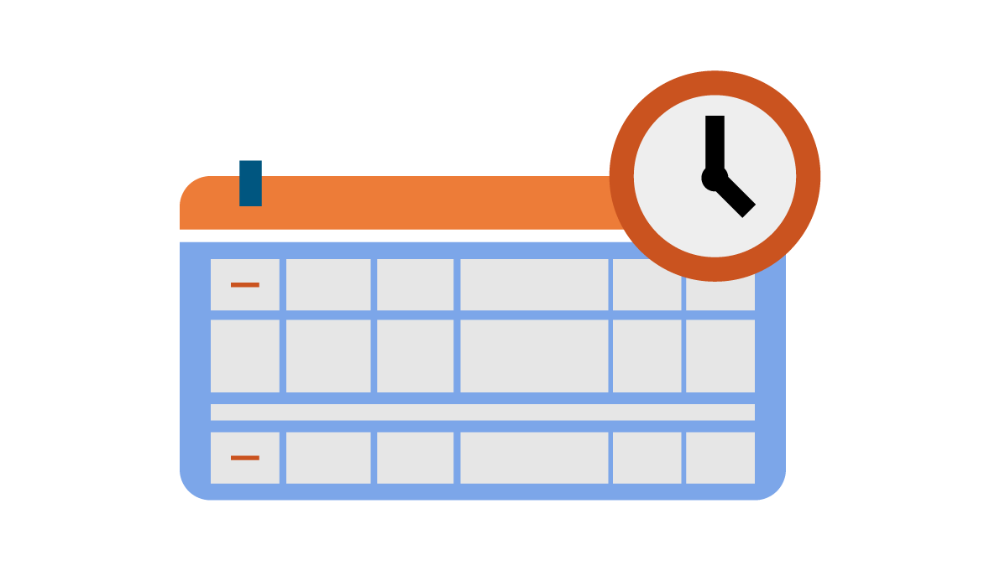
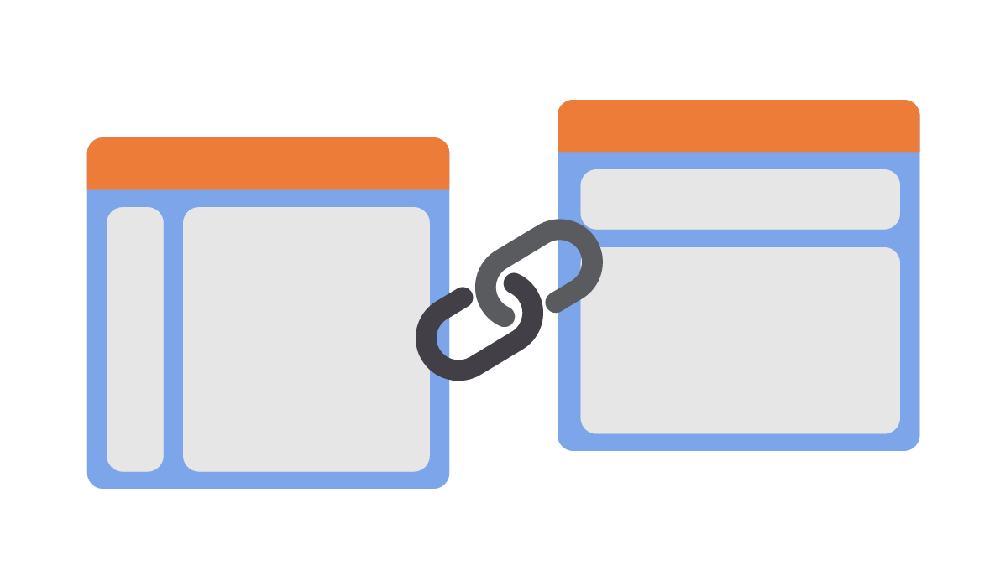
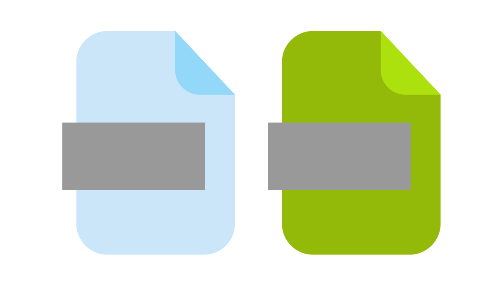

Certificación
Procedimiento de validación de la actualización de un curso académico que ha sido acreditado previamente, y se encuentra vigente, esta se realizará cada período académico cuando el curso requiera ser ofertado, según acuerdo 016 del 26 de mayo de 2016. La rubrica, cuenta con 15 criterios de evaluación que contemplan todos los elementos de cada entorno del aula virtual. (VIMEP, 2020)

